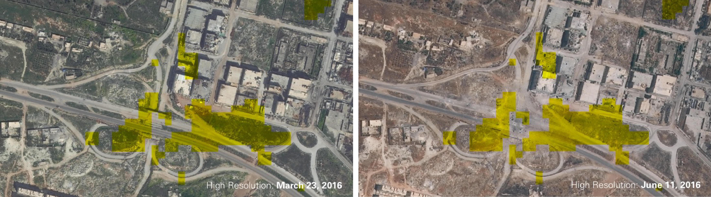
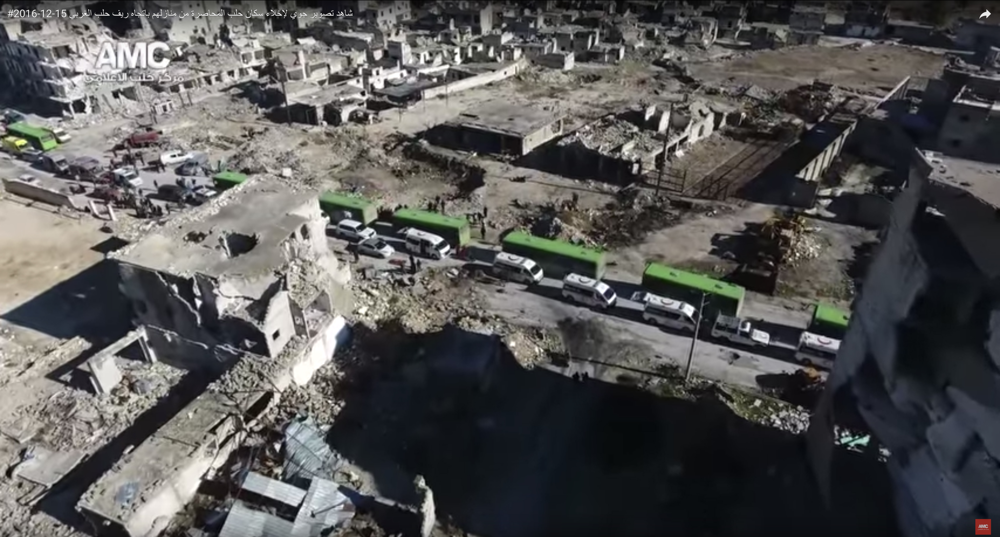
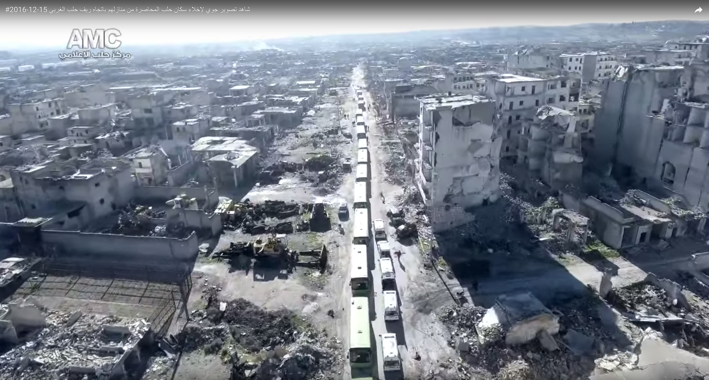

In spring 2011 Syrians all over the country took to the streets in peaceful protest to demand the removal of authoritarian president Bashar al-Assad. Their protests were met with violent repression, and the unrest escalated to armed conflict. The Syrian revolution-turned-war is still ongoing at the time of writing. Aleppo, formerly Syria’s largest city and commercial center, was one of the war’s main battlegrounds from 2012 to 2016.
1
To better understand the multisided urban warfare in the city and to grasp the scale of Aleppo’s destruction, the Center for Spatial Research constructed an open-source, interactive, layered map of the city at the neighborhood scale.2
Using high-resolution satellite imagery from before and during the conflict, the map documents forms of urban damage, shifting front lines and battlefield positions, civilian responses to conflict, and the effects of warfare on the city’s storied cultural heritage. The map is a platform for narrating what happened to and in Aleppo, with multiple sources of data—and it is also an experiment in ways of conjoining mapping software, imagery, and data from both participants and observers in order to understand conflict at the urban scale. In the case of Aleppo, an ancient and historic city, what started as a project to document the destruction of memory allowed us, ultimately, to produce a memory of destruction.3
To create the map, we had to devise methods for viewing and analyzing the conflict from a distance. Although we were in contact with residents and activists in the city throughout our research, our work was necessarily remote. One of the virtues of that necessity was the development of tools and methods for the long-distance study of an urban battlefield. We strove not to displace perspectives and analyses from the ground but to explore how the remote view allowed us to aggregate dispersed spatial information and thus enabled the map’s users to draw connections not always visible at close range. Over three years, from 2014 to 2016, we gathered and analyzed numerous data sources and sets to create the map’s many layers. We spatialized and preserved video material from a set of reliable YouTube channels presenting work by local activists and news organizations in the city. Collaborating with geographer Jamon Van Den Hoek, we experimented with using freely accessible, low-resolution Landsat imagery to detect changes in the urban fabric of Aleppo every two weeks during the war. This work, in turn, guided specific investigations using higher-resolution but more expensive satellite imagery, which we purchased from private satellite companies. This process allowed us, as well, to fill in some of the gaps in the damage data generated by the Operational Satellite Applications Programme (UNOSAT) of the United Nations Institute for Training and Research (UNITAR), released once a year during the war, in 2014, 2015, and 2016.

Overlaid on a 2016 satellite image of Aleppo, the UNITAR-UNOSAT damage data depicts the location and intensity of the destruction that occurred between 2012 and 2016. Unless otherwise stated, all images in this chapter were produced by the Center for Spatial Research.
Violent conflict produces all sorts of casualties, sometimes intentionally and sometimes collaterally. With NGOs and other researchers doing the important work of documenting, monitoring, and researching civilian mortality, internal displacement, and refugees, or investigating the detention and torture of activists and fighters, we chose to focus on urban damage at various stages of the war. From its outset in July 2012, through four years of territorial stalemate, to the final siege of the city between August and December 2016, our map traces patterns of urban damage and asks what these patterns reveal of the tactics and strategies of designed destruction, of organized violence that often exceeds the bounds of “proportionality” and “military necessity” (as problematic as those criteria can sometimes be). As a platform, the map not only confirmed what we knew about damage in well-known places such as the historic Citadel of Aleppo but also helped direct our attention to less prominent and now obliterated districts in the city, such as the so-called “informal” neighborhoods of Salah-ad-Deen and Ashrafeyeh. By chasing clues provided by the map and its data layers, by tracing military operations, and, crucially, by connecting these processes to pre- and postconflict economic, social, and legal developments, we began to grasp the ways in which the extraordinary vandalism and brutality of war in Aleppo are connected to the everyday depredations of state power in Syria.
Compared to other major cities in Syria, where demonstrations and violent responses by the police and security forces were widespread, Aleppo was relatively calm in the first year of the war. It wasn’t until the summer of 2012—when rebel fighters, predominantly recruited from the city’s immediate environs, entered Aleppo—that the city was consumed by armed conflict and soon split in half, with the western side under government control and the eastern side becoming rebel territory. For four years, until summer 2016, the borderline between east and west barely moved, solidifying Aleppo as a divided city.
4

Aleppo’s autonomous supply infrastructure during the conflict—which was organized around a single road, with rebel forces operating in the north and government forces in the south—explains, in part, the city’s internal division from 2012 until 2016.
How can we explain the front line’s relative stability? An analysis of the map suggests that one determining factor was the specificity of Aleppo’s transportation and supply infrastructure, which regulated both daily life and military operations in the city during the four years of conflict.

The first clashes in July 2012, which took place mostly in eastern Aleppo, quickly established a divided city of rebel- and government-held neighborhoods.
One of the first clashes between government forces and rebel fighters took place in Salah-ad-Deen in the city’s southwest.
5
Intense fighting in the neighborhood continued over the course of two months, with control of the area shifting between state and rebel forces.6
The neighborhood ultimately fell into rebel hands and became one of the Free Syrian Army’s first strongholds. The fact that fighting first erupted in Salah-ad-Deen is not coincidental: it is strategically located next to one of the main roads into Aleppo from the south, the supply route that linked government troops to regime strongholds in the rest of the country. The road furthermore allowed access to the country’s major weapons manufacturer, Defense Factories, located just south of Aleppo near the town of as-Safira.7
Assad’s army succeeded in containing rebel forces within Salah-ad-Deen, and this containment sufficed to defend the army’s southern supply line throughout the war. The regime was able to maintain the supply of resources even when rebel forces took control of a portion of the Damascus-Aleppo highway between Aleppo and Homs in March 2013—forcing Assad’s troops to shift their main supply corridor to the so-called “southern axis,” a narrow road connecting Hama and Aleppo via as-Safira and Kanasir.
With southern access roads firmly in the hands of the regime, rebel forces established an entirely separate supply system into Aleppo from the north, where most armed rebel groups operated along a corridor from Kilis (in Turkey) to Azaz and Aleppo.
8
A twenty-eight-mile-long front line between the Al Nusra Front and ISIS formed parallel to this road, stretching from the Turkish border all the way to Aleppo.9
Therefore, while government forces and their allies operated close to Aleppo, attempting to tighten the circle around the city, rebel groups engaged a much larger territory spanning the areas north of the city to the Turkish border. In many ways, it was the access to resources that fueled and secured the division of the city into two relatively stable parts. Relying on completely independent supply infrastructures meant that both sides were focused on maintaining and fortifying their defenses rather than on enlarging their territories within the city.Minor interruptions notwithstanding, these two main supply corridors endured until July 2016, when, along the northern supply route, Castello Road was captured by regime forces, cutting rebel forces off from their main thoroughfare and supply line. With this operation, the government effectively won the battle for Aleppo, as procuring supplies became less and less feasible for the rebel groups.
Using Landsat imagery in combination with high-resolution imagery and YouTube videos, we can see that the targeting of Castello Road began in May 2016. The road was within reach of regime artillery fire by July 7 and was finally taken by government forces on July 17.
10
This period of intense fighting is further evident in the UNITAR-UNOSAT damage data, which shows the destruction of Ashrafeyeh in summer 2016. Ashrafeyeh, a rebel-held neighborhood in close proximity to Castello Road, exhibits one of the highest damage rates of all neighborhoods in the dataset. This regime advance ushered in what became known as the siege of Aleppo.
These two images show traces of the government capture and control of Castello Road in summer 2016, using Landsat pixel value change overlaid onto high-resolution satellite images in March and June 2016. What can be seen in June 2016 is major damage to the Castello Road overpass as well as to buildings in the surrounding area.

These three images depict damaged-building data produced by UNITAR-UNOSAT, zooming in on Ashrafeyeh in 2014, 2015, and 2016. Comparison of data from the three dates shows the drastic increase in the number of destroyed buildings in this neighborhood adjacent to Castello Road. Because this data was published only three times during the conflict (in 2014, 2015, and 2016), with points marking damage but not date of damage, we used biweekly low-resolution Landsat imagery to detect incremental change, shown in the images below.
This military victory could have been an opportune moment to reach a political solution, but all attempts failed. A cease-fire between the Syrian government and a US-supported coalition of Syrian opposition groups, brokered by Russia and the United States in September 2016, was poorly adhered to and lasted only several days.
11
Instead, the subsequent fighting, which lasted until December 2016, resulted in the systematic destruction of eastern Aleppo through heavy government shelling, barrel bomb air attacks, and finally a major ground offensive beginning on November 27. Moving roughly north to south, Assad’s regime destroyed and seized neighborhood after neighborhood.12
By December, the rebel-held part of Aleppo was reduced to a small pocket in the southwest of the city—in the Salah-ad-Deen neighborhood. It was in this neighborhood that the first clashes between regime and rebel forces had taken place in 2012; and it was from here that the green buses, evacuating the final remaining groups of rebel supporters to other provinces, left the city in 2016. Aleppo’s war thus began and ended in precisely the same neighborhood.

After months of siege warfare, regime forces finally seized control of eastern Aleppo by destroying one neighborhood after the other from November 27, 2016, to December 23, 2016


Stills from Aleppo Media Channel Drone Video, “Aerial Photography of the Evacuating of the Besieged Residents of Aleppo from Their Homes towards the Western Countryside of Aleppo,” YouTube, December 15, 2016. Drone video produced in December 2016 depicts the evacuation of rebel supporters from Salah-ad-Deen, as well as the neighborhood’s destruction following regime bombings. The footage was produced by an activist who was part of the Aleppo Media Channel, whose video archive we have stored and mapped. Content produced by this group often made it into the reporting of international news networks, sometimes without credit. The Center for Spatial Research has written extensively about this and other drone videos and also communicated with the videographer: “The View from Above, by Design,”
The strategic military target—the rebels’ supply infrastructure—had long been captured when eastern Aleppo was almost completely flattened in the five-month-long siege. Potential conclusions from this outcome are further complicated by looking at what exactly was damaged. The systematic destruction took place almost exclusively in the city’s so-called “informal” settlements. A 2009 report, commissioned by the Syrian government and produced by the German Agency for Technical Cooperation (Gesellschaft für Technische Zusammenarbeit, or GTZ), designated twenty-two of Aleppo’s neighborhoods as “informal.” Using that report, addressed in more detail below, we can see a strikingly consistent pattern of damage across satellite images from 2012 to 2016: 53 percent of all damage was registered in “informal settlements,” with the majority of the rest occurring in the Old City. Eighty-eight percent of all damage was registered in the rebel-held areas of eastern Aleppo. Both Salah-ad-Deen and Ashrafeyeh were listed as “informal” neighborhoods in the 2009 report—and both have been reduced to rubble.
Suggesting a direct, causal relationship between the labeling of these areas as “informal” in 2009 and the destruction of them in 2016 would simplify complex historic processes. What our spatial analysis of warfare in Aleppo does show, however, is the central role these neighborhoods played in the course of the war—and surely will play in any so-called postwar reconstruction.

This map of the 2016 UNITAR-UNOSAT damage data shows that just over 50 percent of damage in Aleppo occurred in the city’s “informal” neighborhoods. Damage in those neighborhoods is highlighted in black.
In April 2018, the Syrian government adopted Law 10, a new property law creating designated zones for reconstruction across Syria. Presented as an urban planning measure and as “progress” toward a “modern postconflict Syria,” the law has been strongly criticized for authorizing the confiscation and redevelopment of property without due process or compensation and for constituting a major obstacle to the return of displaced Syrian residents.
13
In fact, Law 10 radically extends a previous provision, Decree 66, from September 2012. Limited to the Damascus province, that decree allowed the government to “redevelop areas of unauthorized housing and informal settlements.”14
Based on these provisions, the decision about which areas are to be expropriated and redeveloped lies in the hands of the Assad family and those close to the regime. Critics have pointed out that Decree 66 and Law 10 have been and will continue to be used to crack down on dissent in specific areas and as a punitive measure after revolts. In 2012, for example, the neighborhoods designated for redevelopment under Decree 66 comprised exclusively areas with strong opposition support.
15
Furthermore, the laws constitute a transfer of assets, tax-free, to private companies—rewarding and further enriching those who stood with the regime throughout the conflict. In March 2012 new legislation was introduced that allowed the establishment of real estate financing companies; a decree in May 2015 granted all units within the state the authority to form private investment companies; and in the following year, a new law permitting private companies to make deals with the government to manage state assets was set in motion.16
Together, this legal regime creates lucrative investment opportunities for businesspeople close to the government—consolidating and reinforcing the patrimonial nature of the Syrian state.Law 10 cannot be seen as a “postwar” development for the reconstruction of war-torn areas. As an extension of a 2012 decree, signed at the very beginning of escalating warfare, and based on a process of real estate privatization that had been underway long before fighting began, this legal framework complicates the notion of war as a period of violence with a designated beginning and end. It blurs the temporality of war. From this point of view, the Syrian civil war constitutes one particularly devastating episode in a longer process of state violence and resource allocation. Ways of knowing the war-torn city thus require a frame that is broader than merely mapping military operations: violent conflict works hand in hand with seemingly mundane but often weaponized processes of urban planning and policy-making—in other words, processes of politics (“by other means”).
Most important for our purposes, Decree 66 and Law 10 focus exclusively on “unauthorized housing and informal settlements.” Generally, the term “informal settlement” designates areas where residents either reside on land they do not own—land that is usually owned by the state—or build on land they own but lack the planning permission to do so. Encompassing vastly different social and economic classes, these areas generally experience substandard provision of services such as water, electricity, transportation, or sanitation; however, “informal” here does not necessarily imply the slum-like conditions that the term might imply elsewhere. From 2003 onward, the Syrian government sought to identify these areas and made them the focus of central planning initiatives. Assad’s regime introduced numerous policies and laws for upgrading and legalizing “informal” housing, while also instituting increasingly drastic measures against illegal construction. Yet a government report estimated that in 2011 up to 50 percent of Syria’s population lived in “informal” housing.
17
Current developments around Decree 66 and Law 10, both focusing on developing precisely these areas, are hence the continuation of policies almost two decades old.In Aleppo, roughly half of the city’s 2.4 million inhabitants lived in the twenty-two designated “informal” neighborhoods before the revolution turned into civil war. As used in the 2009 GTZ report, the term “informal” blankets different economies of informality: some neighborhoods, though not all, are comparatively poor; many, though not all, are provided with official infrastructure. In fact, one of Aleppo’s “informal” neighborhoods is the relatively wealthy suburb of Khan al-Assal, where “large weekend villas, many with swimming pools,” dominate the landscape. Khan al-Assal is included on the list of “informal” settlements alongside two Palestinian refugee camps administered by the United Nations Relief and Works Agency.
18
The designation of “informality” authorized the report’s intention for these neighborhoods: to “minimize their growth” and “upgrade” their “social, economic and environmental conditions.”19
It was in these often disadvantaged areas that early protest movements began across Syria and, in 2012, where rebels found their support base in Aleppo. This was not a coincidence. These neighborhoods tell a complex history of Syria: from the colonial legacies of Ottoman and French governance to the processes of class formation; from the role of the peasantry in Hafez al-Assad’s rise to power to the growth of the state apparatus and its rigid real estate zoning practices during the Baʿth Party rule; from the establishment of a tight state-business network through Bashar al-Assad’s “neoliberal” reforms to the role of the army and security apparatus in enforcing this network.
20
“Informal” settlements further mirror patterns of migration following the Iraq War beginning in 2003, which displaced half a million Iraqis to Syria, where they joined Palestinian and Lebanese refugees already residing there. There was also a sharp increase in internal rural migration to these neighborhoods, partly tied to a drought that began in 2006 and to the Syrian government’s agricultural policies and corruption, which transformed the drought into a humanitarian catastrophe.21
Therefore, studying the complexity of these neighborhoods beyond their designation as “informal” is necessary to understand the two forms of sanctioned destruction and conflict in Syria: the continuous emphasis on these neighborhoods in planning documents like Decree 66 and Law 10 and in the violence that occurred on the ground.It is through the processes of mapping and spatial analysis that we can appreciate how essential these “informal” neighborhoods were to the war in Aleppo—and how essential they continue to be in its aftermath. After five years of warfare, it is these neighborhoods that lie in ruin. The elaborate communal, economic, and material threads that for centuries underpinned the social fabric of Aleppo have been cut. The initial class divides between the wealthier western quarters and the poorer eastern neighborhoods of the city have grown even more stark. The questions of land ownership, real estate speculation, and housing shortages—which determined the issues around “informality” and were already prominent before the outbreak of military violence—continue to consolidate the economic, political, and spatial division of Aleppo’s residents. The recent developments in reconstruction have replicated previous patterns, strengthened the power of the regime, and further marginalized Syria’s disenfranchised population. It is safe to say that the future of Aleppo, and maybe Syria as a whole, will be determined in its “informal” neighborhoods.
There are numerous other cities in Syria that could be investigated with this kind of approach—from Daraa and Damascus to Hama, Homs, Idlib, and beyond. Our research on Aleppo constitutes merely one exemplary case of extraordinary violence among many. However, only by connecting the exceptional violence of warfare to the more mundane, everyday violence of life and law in an authoritarian regime can we understand the events unfolding in Aleppo during the four and a half years of conflict as well as in its aftermath. And it is through precisely this lens that we need to continue to study the urban developments in Syria’s formerly largest city, where war continues to be fought by other means.
Project Team:
Laura Kurgan, Grga Basic, Eva Schreiner
Return to Case Studies